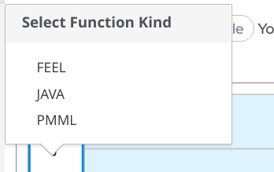
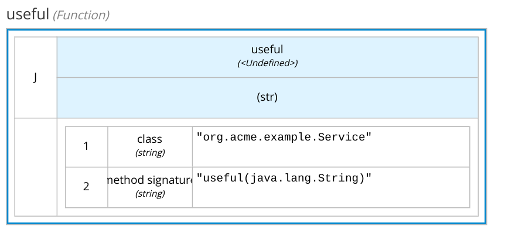

Decision Model and Notation (DMN) is designed to catch the crucial business logic which affects decisions. It’s not meant to be a replacement for a general purpose programming language. FEEL is a powerful expression, but it is on purpose designed to be an expression language and not an imperative language to avoid bringing in the DMN unnecessary complexities which should be addressed somewhere else.
For example, the "french amortization method" is widely used in the financial industry, however it does not make a lot of sense to implement it in DMN.
Why not? Because, it’s a fixed algorithm not subject to change, the implementation is already available somewhere else and more importantly business users don’t want to change that logic. Whereas, It’s likely that business users want to adjust the algorithm parameters based on the customer features: eventually, this part of the logic is eligible to be designed in a DMN.
In short, at the design stage you have to decide what you need to implement in Java (or another language) and what you need to implement in DMN. The input data of a decision can be pre-processed by an application logic, the same applies to the output data which can be enriched or used by a complex algorithm.
In some cases, complex data manipulation may be required within a decision, which is difficult to implement in FEEL but easy to write in Java.
Inside DMN, you can call a static method of a Java class. The Function call can happen inside a Context or in Business Knowledge Model, in essence:
Click in the corner and switch from FEEL to JAVA

Select Java
Define the Fully Qualified Name of the Java Class
Define the method signature.
Define the parameter list. Here the final outcome:

Java function Pay attention: in Java a string is a class, so you have to type the fully qualified name: java.lang.String. In the following video, a step by step tutorial using Kogito DMN: